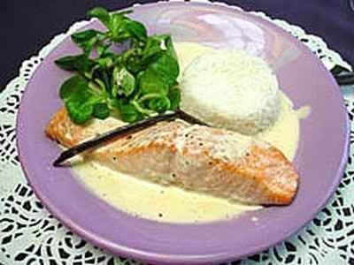

Saumon à la vanille
Ingrédients
4×
- 2 échalotes
- 20 g de beurre
- 2 c. à c. de sirop de sucre de canne
- 1 sachet de sucre vanillé
- 25 cl de crème fraîche entière
- 1 gousse de vanille
- 4 pavés de saumon

Préparation
Étape 1
Émincer très finement 2 échalotes et les rissoler dans 20 g de beurre. Dès qu’elles suent, baisser le feu et ajouter 2 c. à c. de sirop de sucre de canne puis 1 sachet de sucre vanillé.
Étape 2
En parallèle, chauffer 25 cl de crème fraîche entière et y infuser 1 gousse de vanille fendue et grattée (ou 1/2 cac de vanille en poudre). Ajouter les échalotes.
Étape 3
Saisir 4 pavés de saumon dans une poêle bien chaude pour qu’ils soient croustillants. Servir avec la sauce.
Résumé
2 échalotes
20 g de beurre
2 c. à c. de sirop de sucre de canne
1 sachet de sucre vanillé
Émincer rissoler
25 cl de crème fraîche entière
1 gousse de vanille
infuser
4 pavés de saumon
Saisir